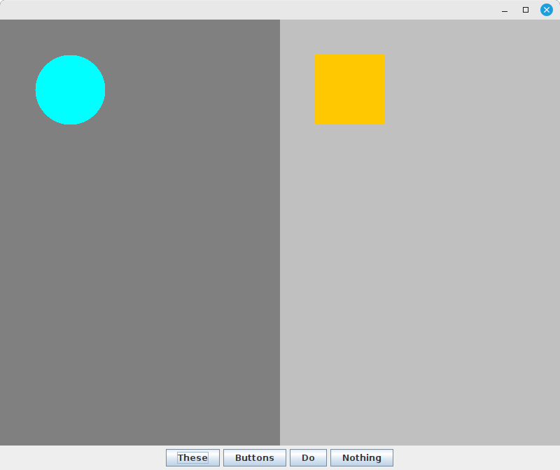
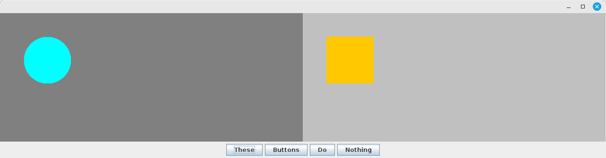

Week 9
Create a Java application that displays the window shown below. Its layout must behave the same when resized as what you see in the video.
The two areas in the center of the application are instances of the
DrawingPanel class provided below. Each one displays a shape that moves to the
position of the mouse cursor when any mouse button is pressed in that panel.
You should create a class for each of the shapes shown in the program. Your
class will need to implement the MouseListener interface so it can receive
mouse events from its panel, and it will need to implement the Drawable
interface (provided below) so it can be displayed by the panel.
The buttons do not have to do anything when clicked. They're only there to give you a reason to use several different layout managers.


import java.awt.Dimension;
import java.awt.Graphics;
import java.awt.event.MouseListener;
import java.util.ArrayList;
import javax.swing.JPanel;
public class DrawingPanel extends JPanel {
// Collection of drawables that can dynamically grow as we add to it
private ArrayList<Drawable> drawables;
public DrawingPanel() {
setPreferredSize(new Dimension(400, 600));
drawables = new ArrayList<>();
}
public void addDrawable(Drawable d) {
drawables.add(d);
repaint();
}
@Override
public void paintComponent(Graphics g) {
super.paintComponent(g);
// Call the draw method of each drawable in our list
for (Drawable d : drawables) {
d.draw(g);
}
}
}
public interface Drawable {
void draw(java.awt.Graphics g);
}